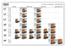
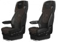
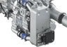

Представляем новый модельный ряд Euro 6 автомобилей DAF! Полностью новый дизайн для максимальной эффективности, надёжности и комфорта для водителя. Новые, соответствующие последним достижениям, двигатели PACCAR, усовершенствованное шасси и современный дизайн кабины являют собой новые стандарты в индустрии.. XF, CF, LF спроектированы для любых задач! И уверенно будут выполнять свои функции в течение всего своего сервисного периода.
EURO 6 Общая информация
Ниже приведена общая информация. Выберите текст и нажмите - появится pdf-файл. Конфигурация оси и обзор кабины
Полная программа продукции DAF Euro 6
Общая информация о кабинах и сиденьях

LF Euro 6
Кабина
CF Euro 6
Кабина, Сиденье
XF Euro 6
Информация о двигателе
PACCAR PX-5
PACCAR PX-7
PACCAR MX-11 для автомобилей доставки, PACCAR MX-11 для грузоперевозок
PACCAR MX-13
Информация о дополнительном оборудовании
Система предупреждения о покидании полосы движения (LDWS)
Аудио системы
Система адаптивного круиз-контроля (ACC)
Система камеры переднего вида
Колесные диски Alcoa
DAF Truck телефон
12-ступенчатая механическая коробка передач с прямой передачей
Замедлитель
Другая информация
Система дополнительной обработки отработавших газов для двигателя DAF
Максимальная топливная эффективность с автомобилями DAF
Интегрированные технологии безопасности автомобилей DAF Euro 6
Персональный помошник водителя (DPA)
Система курсовой устойчивости (VSC)